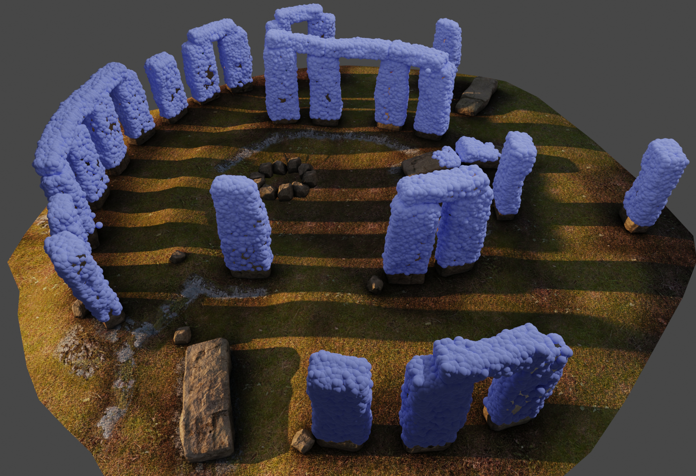
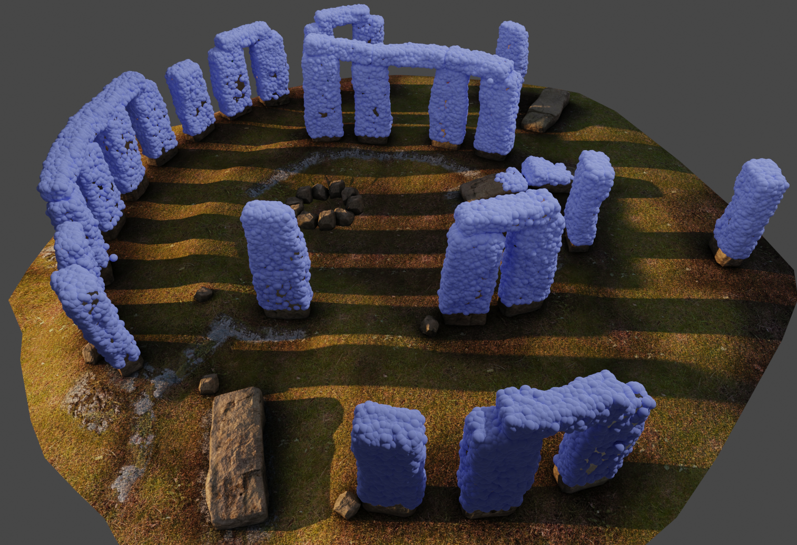
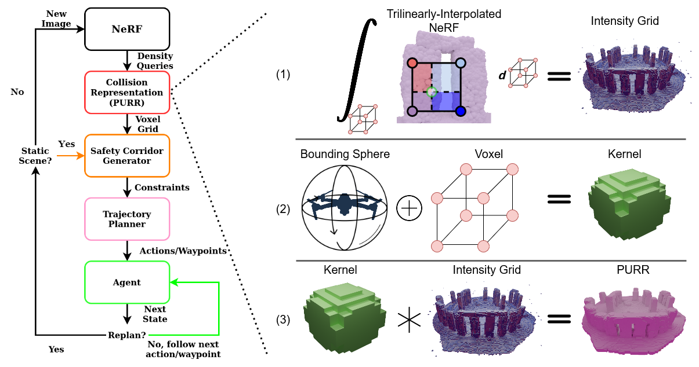

Probabilistic Formulation
We equate a Neural Radiance Field (NeRF) to a Poisson Point Process (PPP). Using this formulation, we can rigorously quantify probabilistic safety.
We introduce a transformation of a Neural Radiance Field (NeRF) to an equivalent Poisson Point Process (PPP). This PPP transformation allows for rigorous quantification of uncertainty in NeRFs, in particular, for computing collision probabilities for a robot navigating through a NeRF environment. The PPP is a generalization of a probabilistic occupancy grid to the continuous volume and is fundamental to the volumetric ray-tracing model underlying radiance fields. Building upon this PPP representation, we present a chance-constrained trajectory optimization method for safe robot navigation in NeRFs. Our method relies on a voxel representation called the Probabilistic Unsafe Robot Region (PURR) that spatially fuses the chance constraint with the NeRF model to facilitate fast trajectory optimization. We then combine a graph-based search with a spline-based trajectory optimization to yield robot trajectories through the NeRF that are guaranteed to satisfy a user-specific collision probability. We validate our chance constrained planning method through simulations and hardware experiments, showing superior performance compared to prior works on trajectory planning in NeRF environments.
We equate a Neural Radiance Field (NeRF) to a Poisson Point Process (PPP). Using this formulation, we can rigorously quantify probabilistic safety.
As a byproduct of our method, we can also solve the matting problem by ignoring samples that fall outside of a bounding box during rendering.
We can also animate the scene by interpolating the deformation latent codes of two input frames. Use the slider here to linearly interpolate between the left frame and the right frame.

Start Frame

End Frame
Using Nerfies, you can re-render a video from a novel viewpoint such as a stabilized camera by playing back the training deformations.
There's a lot of excellent work that was introduced around the same time as ours.
Progressive Encoding for Neural Optimization introduces an idea similar to our windowed position encoding for coarse-to-fine optimization.
D-NeRF and NR-NeRF both use deformation fields to model non-rigid scenes.
Some works model videos with a NeRF by directly modulating the density, such as Video-NeRF, NSFF, and DyNeRF
There are probably many more by the time you are reading this. Check out Frank Dellart's survey on recent NeRF papers, and Yen-Chen Lin's curated list of NeRF papers.
@article{park2021nerfies,
author = {Park, Keunhong and Sinha, Utkarsh and Barron, Jonathan T. and Bouaziz, Sofien and Goldman, Dan B and Seitz, Steven M. and Martin-Brualla, Ricardo},
title = {Nerfies: Deformable Neural Radiance Fields},
journal = {ICCV},
year = {2021},
}